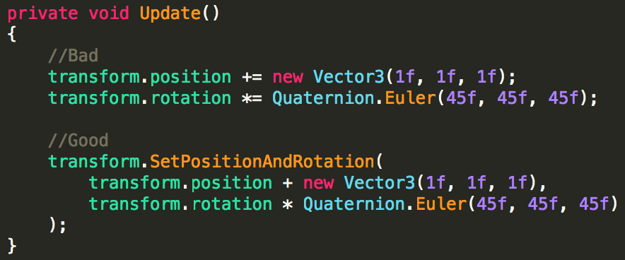
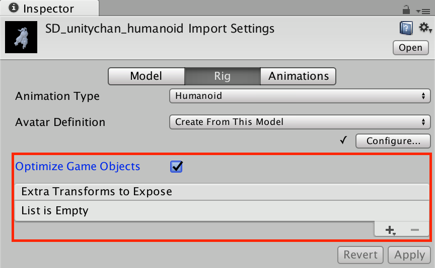
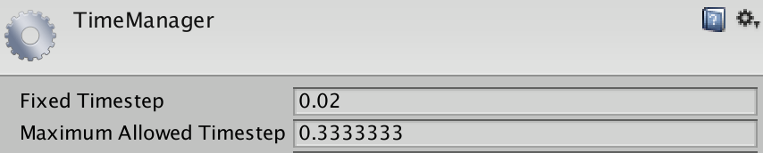
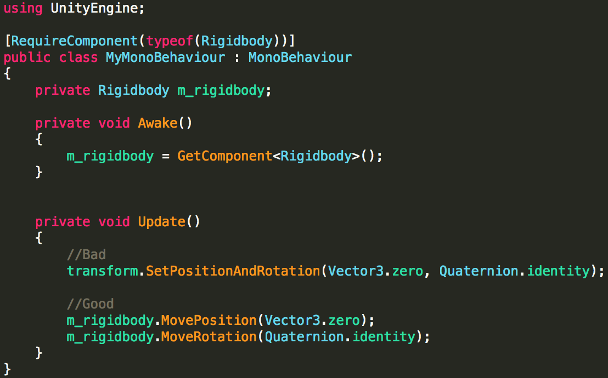

C++：OnTransformChanged
當 Transform Position, Rotation 或 Scale 改變以及 Animators, Physics 影響時執行數次
C#：OnBeforeTransformParentChanged
C#：OnTransformParentChanged
當 Transform 的父物件改變時執行
導致效能花費昂貴的原因有
1. 要求所有 Transform 以及子物件執行
2. 物理相關 Component 會更新物理畫面
3. 重新計算渲染的 Bounding Box
4. 更新粒子系統的 Bounding Box
在 Unity 5.6 中有新的 API
Transform.SetPositionAndRotation
可以改善直接修改 Transform.position 和 Transform.rotation 的效能

在 FBX Importer, Rig options 中的優化選項 Optimize Game Object
https://docs.unity3d.com/Manual/FBXImporter-Rig.html
主要作用有
1. 用較好的多執行緒方式重新排列動畫資料
2. 將模型 Transform 階層關係中多餘的物件刪除（可以在 Extra Transforms 中加入特例清單）
3. Mesh Skinning 多執行緒

影響效能的兩個主要因素：
1. 物理模擬（Rigidbody 更新）
2. 物理隊列（Raycast, SphereCast, etc）
效能花費
1. 與場景的複雜度與密度有密切關聯
2. Box Collider, Sphere Collier 花費低
3. Mesh Collider 花費相當高
物理隊列（Physics Queries）
1. 在世界空間中收集潛在碰撞，由 PhyX(“broad phase”) 執行
2. 在潛在碰撞中根據 Layers 進行篩選，由 Unity 執行
3. 對每個潛在碰撞體進行測試以尋找真實碰撞，由 PhyX(“midphase” & “narrow phase”) 執行
如何減少潛在碰撞
1. 將世界空間分割成數個小區域
2. 根據場景密度來限制射線長度
3. 設定射線最大碰撞距離
用準確性來換取效能
1. 降低 Fixed Timestep
2. 依據 FPS 規格來調整 Fixed Timestep
3. 大多數遊戲可以接受 0.04 或 0.08

在有 Rigidbody 的物件上
不要透過 Transform 來進行位移
而是透過 Rigidbody.MovePosition, Rigidbody,MoveRotation

https://bitbucket.org/Unity-Technologies/memoryprofiler
作用：顯示在記憶體中的所有 UnityEngine.Objects 以及 C# objects
HideFlags
若是將資源設定成 HideFlags.HideAndDontSave 則永遠不會卸載
確保貼圖設定為 non-readable
若是 Read/Write Enabled 開啟
記憶體使用量會變成兩倍
Unity最適化講座 ～スペシャリストが教えるメモリとCPU使用率の負担最小化テクニック～ – SlideShare
Unity最適化講座 ～スペシャリストが教えるメモリとCPU使用率の負担最小化テクニック～ – YouTube